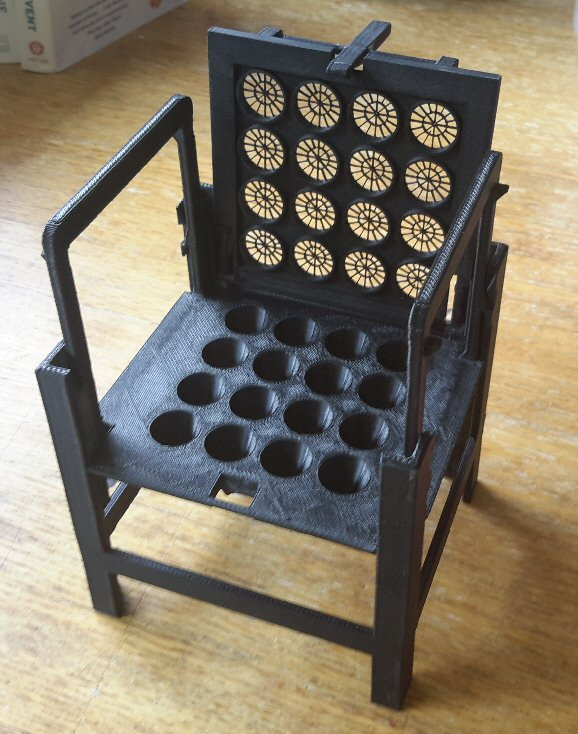
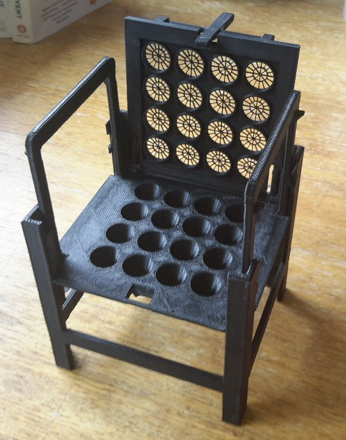

 |
Recent
Projects in Design and
Fabrication:
|

 |
Recent
Projects in Design and
Fabrication:
|
Imaging, Instrumentation and
Informatics

Grant B. Harris, Consulting Engineer
Scientific Informatics Analyst at the Marine Biological Laboratory for 15 years.Contact: GBH@Explorative.Engineering 508-524-1709
Software design and hardware interfacing for biological microscopy and optics.
Founder of software design and business process consulting firm, Workframe, for 15 years.
Mechanical engineering degree from MIT.
Mariner, blue water sailor, navigator, mechanic, rigger; technical support engineer on research ships.
Experienced consultant, facilitator and mediator, focused on project planning and process improvement.